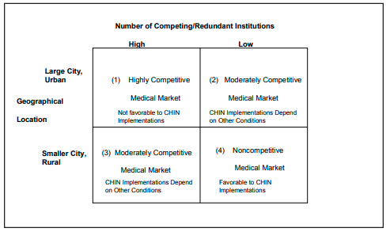

On the other hand, WHIN serves as both an application (CHIN) vendor and an IOS
venture electronically supporting its multiple health care participants. What differen-
tiates these situations, and what implications can we draw from this for our model of IOS
implementation?
Perhaps the biggest difference in the study results between WHIN on the one hand
and RHINNO and NEOHN on the other, is the apparent impact of Push/Pull Factors.
While these factors showed little impact in the WHIN case, they had a largely negative
impact for both RHINNO and NEOHN implementation. These factors are, no doubt,
related to the environment. The nature of the market, geographical location, and
infrastructure supporting CHIN implementation differentiates WHIN from the other two
cases. The Wisconsin market is characterized by a fairly large group of relatively small,
non-competing health care providers. CHIN implementation in this environment is not
a zero-sum game. CHIN participants stand to lose little by engaging in cooperative
information exchange processes. WHIN participants, unlike those in RHINNO and
NEOHN, do not appear to endorse the idea that one organization’s gain is another’s loss.
Further, CHIN participation becomes particularly appealing as smaller organizations
recognize their inability to fund such massive infrastructures on their own, and larger,
free-standing hospitals and payors realize their limited ability to finance the expenditures
associated with implementation. WHIN and its participants are located in a smaller urban
environment (unlike CHIN initiatives in New York, Chicago, and Cleveland), where health
care players tend to be geographically dispersed. This, in part, engenders the need to
electronically share information and may explain the lack of concern for competitive
forces in the WHIN case.
Figure 2 shows how the nature of the competitive environment might impact the
desirability of shared IOS, including CHINs. In a large, urban market with many
competing health care providers and/or payment plans, a highly competitive market
develops (Box 1 of Figure 2). Institutions within this market are generally technologically
sophisticated and often have their own, internal health care information systems and
procedures in place to enable electronic data sharing. The nature of such markets could
hinder CHIN implementations. Organizations in these competitive markets are likely to
be unwilling to share information due to the perceived threat of competition. Conse-
quently, there appears to be little justification for interorganizational cooperation or a
voluntary CHIN in such markets. The Cleveland metropolitan market has these charac-
teristics, and this may explain the failure of RHINNO to develop.
At the other extreme, small cities or rural areas with relatively few, geographically
dispersed health care providers and payors present non-competitive markets (Box 4 of
Figure 2). CHIN participation is most attractive in these cases, as organizations can
engage in information sharing with little or no perceived threat of competition. The lack
of service redundancy in the marketplace increases the likelihood that information
sharing utilizing a shared infrastructure can add value. Markets in larger, less populous
states are examples that fit this model. In such markets, push/pull factors like competition
and economics as identified in the proposed CHIN implementation model (Figure 1) would
likely favor implementation.
Boxes 2 and 3 represent moderately competitive markets, which can develop both
in large and small metropolitan regions. These settings fall somewhere between the
extremes of those markets characterized by Box 1 or 4. They are likely to be smaller
markets, or markets with less “density” of medical providers and payors. These are likely
Figure 2: Market/location matrix
to be markets where the impact of competitive and economic factors on CHIN/IOS
implementation is more difficult to predict. Markets like Milwaukee and Akron would
seem to fall into this category. In Milwaukee, the lower degree of competition allowed
WHIN to proceed successfully. In Akron, on the other hand, NEOHN was less
successful, perhaps due to the proximity (and overlapping) of Cleveland (and RHINNO),
a large, competitive (Box 1) market.
These different market situations suggest the need for alternative models, both for
CHIN functioning and for CHIN implementation. Health care players in highly competi-
tive environments may participate in IOS educational, general organizational informa-
tion, and clinical services. Similar to trade associations, such health care cooperatives
could pool resources to gain power through political lobbying, engage in knowledge
transfer particularly in specialized domains, and seek purchase discounts for needed
technologies and services. Widespread sharing of patient information, however, will not
occur easily in such markets, as powerful players develop proprietary systems to serve
their own needs and maximize their individual market shares. In less competitive markets,
the true potential of CHIN functionality for sharing data among multiple providers is more
likely to be realized.
As is evident from this study, the factors affecting CHIN implementation are likely
to differ in different market situations. While Behavioral Factors seemed to play similar
roles in each case, Push/Pull Factors and Shared System Topology (infrastructure)
factors did not. The conditions for success depicted in the research model appear to be
unattainable in certain environmental scenarios. This is particularly the case in environ-
ments characterized as a highly competitive. In these cases, the competitive forces,
economic justification, political issues, and IOS enablers are most critical to determining
implementation success – they emerged as the go/no-go factors in the research model.
Thus, it appears that the market for cooperative CHINs may be limited.
CHIN technology would enable health care constituents to electronically create,
maintain, and transform medical data via internal organizational and network-wide
databases. Medical information can be housed in several tables, such as patient info,
employer info, dependent info, medical records, physician info, etc. Attributes describ-
ing each entity with appropriate relationships would be established. These databases
can, then, feed into a data warehouse with data marts for each CHIN constituent. These
data marts can be used to manage specialized processing by individual CHIN organiza-
tion. Data from the CHIN overarching database is extractable to facilitate data-mining
processes.
Data mining often follows one of several methods:
1) Predictive modeling — includes classification and regression techniques that are
used to forecast unknown outcomes or variables;
2) Clustering – establishes clusters (based on an analogous statistic) in order to
compare historical data to analyze new data;
3) Association – determines relationships between attributes in a database that often
can be correlated as a result of causality; and
4) Summarization – generalizes task-specific data into a data cube that can create
graphical representations.
While several organizations (IBM, Oracle, Silicon Graphics, Angoss, SAS, and
SPSS) offer data-mining technologies, the SAS Enterprise model is provided, herein, to
show the technology interface (Figure 3). The SAS system supports a myriad of mining
models, including decision trees, regression, and neutral networks.
Once mined, the data offers its owners knowledge regarding fraud, profiling,
retention, and profit analyses. In general, these methods provide organizations using
on-line analytical processing (OLAP) with a multidimensional, logical view of critical
data. Thus, strategic knowledge can be derived using forecasting, trend analyses, and
statistical analyses. For health care organizations, in particular, data-mining solutions
can provide payors, hospitals, alternative delivery systems, clinics, physicians, and
home health agencies with more succinct, meaningful answers to issues, such as:
1) (In)effective methods of patient care;
1) Local and regional health statistics;
1) Cost analyses by segments of a population, provider plan, or demographic group;
1) Drug subscription, treatment, utilization, etc.;
1) Genetic treatment, medical research, and discovery; and
1) (In)effective methods for mining “text-based” clinical data
As Figure 2 suggested, regional markets in Boxes 1 and 4 are best suited for these
implementations. Moreover, Box 1 (Highly Competitive Medical Markets) is likely to
Figure 3: The SAS Enterprise data-mining technology (http://www.sas.com/products/
miner/index.html).
serve as an ideal environment given the presence of larger number of payor plans and
enrollees – thereby resting on the notion that CHIN participants are in need of vital data
analyses on cost effectiveness, profitability, treatment, resource utilization, etc. In
noncompetitive environments (Box 4), the health information network fosters a coupling
on dispersed groups where competition and economic dimensions are not the primary
drivers of the implementation
To this end, CHIN technologies offer the industry the ability to better mine larger
sets of data to accomplish four critical analyses:
1) Fraud Detection – Of particular interest to health care providers, this application
features provider and patient profiling along with behavior and resource utilization,
charting tools, and detection functionality. Data mining via CHIN technologies
permits continuous monitoring on the above, yet these analyses are performed on
a broader scale (i.e., local, state, and regional levels).
Moreover, similar to fraud detection among credit card agencies, CHIN constitu-
ents, particularly government agencies, can mine data to discover (mis)uses of
medical benefits, monetary losses, and legal infractions
2) Profitability Analysis – Figure 1 and the material that follows clearly points out the
criticality of the implementation process. As noted in Table 2, every CHIN
participant organization was significantly concerned about the economic dimen-
sions associated with investing in the network technologies in question.
While the CHIN technology enables larger data sets to analyzed, its users can
conduct additional regional analyses by metropolitan areas, counties, states, and
districts. Effective health care plans, services, care delivery plans, and even those
“profit generating” physicians - can be determined. Ineffective or non-profitable
services can then be eliminated based on the more global analyses generated from
data-mining technologies.
3)Patient Profiling – By using psychographic data, CHIN research members can gain
amore extensive examination of patient behavior to uncover treatment and care
service utilization patterns. For example, mined data could profile patients by
physicians visited and medical tests ordered, drug treatment, gender, ethnicity,
age, episode of illnesses, just to name a few.
4) Retention Management – Customer relationship management is linked to the notion
of retention management. Ideally, health care payors would like to retain their
existing customer bases while attracting and converting potential customers to
enrollees. Data mining via the CHIN facilitates cross-selling and electronic market-
ing services. While the case can be made for preserving patient members, health
care groups must also think in terms of “retaining” physician members as well.
Thus, identifying services critical to participating physician groups can be just as
fundamental.
A close examination of Table 2 suggests the primary determinants in attaining a
successful CHIN implementation are overcoming Competition, Economic, Organiza-
tional Autonomy and Control and Political Issues – thereby indicating that the technical
or technology implementation is not the deterrent. Rather, the above issues relate to the
broader social and political dynamics of the health care industry. Of the thirty interviews
with members of these projects, there was consistent concern about two issues: 1) what
is the purpose of warehousing community data?, and 2) how should the data be used?
To address the first question, numerous writings have offered rationale for ware-
housing health care data. For instance, the 2001 American Medical Informatics Asso-
ciation Conference (http://www.amia.org) hosted several panels and paper sessions to
address the needs of warehousing medical data; these assessments included:
1) the critical integration of clinical and administrative data from a myriad of source
systems;
2) determination of cost efficiency measures between the general population and
individual patient; and
3) retrospective and prospective studies of medical history, prescriptions and labo-
ratory results among patient medical records.